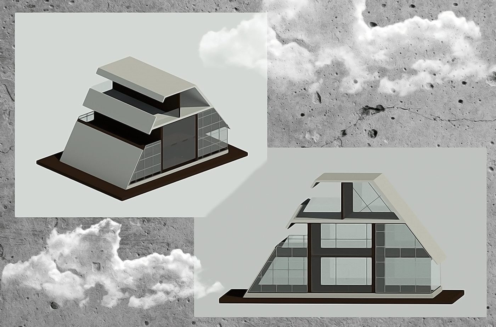

მომავლის სახლი
პროექტი რომელსაც დიდი გამოხმაურება მოჰყვა
ფესტივალის ორგანიზატორი და მასპინძელი, ტრადიციულად,
საქართველოს მწერალთა სახლია.
წელს ელიან ავტორებს უკრაინიდან,
სლოვაკეთიდან, ლიეტუვიდან, ლატვიიდან, შვეიცარიიდან,
ავსტრალიიდან, საბერძნეთიდან, პოლონეთიდან,
ირლანდიიდან, ბელარუსიდან,
გერმანიიდან.
ფესტივალის მთავარი თემა კი იქნება - „შინ“ - სახლის
კონცეფცია და არქეტიპი კულტურასა და ლიტერატურაში.
ამ თემით ეხმიანება კიდეც ფესტივალი როგორც ომს უკრაინაში,
ისე სხვა მწვავე სოციალურ-პოლიტიკურ მოვლენებს.
პროგრამის სადისკუსიო თემებიც ამ სიმბოლოსა და შინაარსის
მიხედვით დაიგეგმა.